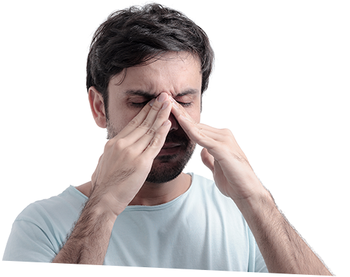

Клиника пластической хирургии
Москва, м. Достоевская,
3-й Самотечный переулок, д. 21
пн-сб с 9:00 до 21:00
Септопластика Искривление перегородки носа
Оплата за консультацию Лор-хирурга вычитается
из стоимости выполненной операции!
Указанная цена действительна до конца месяца.
Ждем Вас!
Малотравматичные операции под местным
наркозом с использованием
радиоволновых методик, без разрезов.
Запешитесь на ПЕРВИЧНУЮ КОНСУЛЬТАЦИЮ
к специалисту и он ответит на все Ваши вопросы.

Септопластика
хирургическое лечение искривления носовой перегородки.
При необходимости, может быть этапом последующей одномоментной
ринопластики с целью коррекции формы наружного носа, что является
возможностью для пациента восстановить носовое дыхания исправить
нежелательную форму наружного носа, не проходя повторные курс
предоперационной подготовки и госпитализации. В ряде случаев,
для наилучшего эффекта от септопластики, может быть желательно
сочетание септопластики с вазотомией или конхотомией, при наличии
изменений носовых раковин.
При искривлении в хрящевом отделе,
возможно проведение операции:
под местной анестезией,
внутривенным наркозом,
медикаментозной седацией.
с использованием радиоволновых методик, без разрезов.
Необходимо послеоперационное наблюдение в течении дня,
и контроля заживления.
ВРОЖДЕННЫЕ
Аномалии развития носа, когда одни элементы носа начинают расти быстрее остальных, что и приводит в конечном итоге к формированию искривления.
ПРИОБРЕТЕННЫЕТравмы носа. Из-за того, что нос является выдающейся частью тела, именно он чаще других и страдает в различных жизненных ситуациях и первым принимает на себя удары жизни. Еще одна группа этиологических факторов искривления перегородки связана с воспалительными заболеваниями. Например, различные формы ринита или разрастания лимфоидной ткани могут провоцировать адаптивные изменения развития различных частей лицевого черепа в том числе и носовой перегородки. Типичным примером такого воздействия является аденоидное лицо, для которого характерно ротовое дыхание, и своеобразная вытянутость лицевого черепа.
вмешательство производится с использованием эндоскопических и радиоволновых методик, без наружных разрезов. Необходимо послеоперационное наблюдение в течении дня, в тот же день после операции пациент может лечиться дома, с последующим наблюдением у ЛОР-врача для удаления тампонов и контроля заживления. Если объём операции большой и есть риск послеоперационного кровотечения, необходимо нахождение в палате под наблюдением в течении суток. Операция проводится под эндотрахеальным наркозом. Необходим полный комплекс предоперационного обследования.
с распространением до спинки носа, вмешательство производится с использованием
эндоскопических и радиоволновых методик. Во время операции производится доступ
к перегородке носа со стороны спинки носа, однако наш подход позволяет ограничиться
минимальным разрезом со стороны колумеллы пространства между ноздрями. Необходимо послеоперационное наблюдение в течении дня, в тот же день после операции пациент может лечиться дома, с последующим наблюдением у ЛОР-врача для удаления тампонов и контроля заживления. Если объём операции большой и есть риск послеоперационного кровотечения, необходимо нахождение в палате под наблюдением в течении суток.
Операция проводится под эндотрахеальным наркозом. Необходим полный комплекс предоперационного обследования.
Наши преимущества:
В нашей клинике активно используются эндоскопические, радиоволновые и лазерные технологии, позволяющие проводить оперативное вмешательство без использования грубых и травматичных консервативных методик, что обеспечивает наилучший результат и более комфортный послеоперационный период, с быстрым восстановлением и возможностью вернуться в трудоспособности.
Послеоперационное наблюдение врача необходимо для того, чтобы избежать осложнений. К осложнениям относятся: образование рубцовых спаек, развитие нагнаивающихся подслизистых гематом перегородки носа, деформация наружного носа, гнойные синуситы и носовые кровотечения. Наша тактика как оперативного вмешательства, так и послоперационного наблюдения, позволяет их избежать и уберечь пациента от возможных проблем.
После операции перегородка носа прошивается специальными силиконовыми пластинами, поддерживающими её в новой форме в течении заживления и уберегающими от образования рубцовых спаек. Помимо этого, устанавливаются тампоны на срок до суток, которые уберегут пациента от носового кровотечения. Оперативное вмешательство подразумевает нахождение пациента в стационарном отделении 1-2 суток, после чего пациент выписывается домой, получает рекомендации по домашнему лечению и посещает врача в нашей клинике раз в 3 дня. Через неделю после операции производится удаление силиконовых пластин с перегородки и снятие швов.
Первичная консультация хирурга - гарантия правильного выбора!
Хотите узнать все об операции и ее точную стоимость?
Встретиться с хирургом, определить его профессианальный уровень и степень вашего доверия к нему?
Хотите получить полные ответы по всем интересующим Вас вопросам?
Запишитесь на бесплатную консультацию СПЕЦИАЛИСТА.
Японский ультразвуковой нож
В нашей клинике мы применяем специализированный пьезохирургический аппарат, который во время операции заменяет собой обыкновенный скальпель. Что позволяет снизить травматичность и добиться прогнозируемого и успешного результата.
Плюсы БЕСКОНТАКТНОЙ хирургии:- безболезненность хирургической манипуляции
- бескровность
- деликатное отношение к мягким тканям нервов, сосудов уменьшение послеоперационного отека
- сокращение времени операции и восстановительного периода
- антибактериальный эффект ультразвука
Наиболее частые вопросы и ответы:
Перед операцией необходим осмотр хирурга, с целью составления плана и тактики лечения. В зависимости от принятых совместно с пациентом решений, подбирается необходимый объём вмешательства, комплекс обследования и составляется план послеоперационного лечения. Во многих случаях, для достижения оптимального результата и убережения пациента от осложнений необходима установка фиксирующих шин на перегородку носа и тампонов. После операции пациенту рекомендуется показаться врачу ещё 2-3 раза, для послеоперационного ухода и уверенности в том, что достигнут необходимый результат операции.
После операции не остаётся следов?В большинстве случаев это так, однако, при высшей категории сложности операции может оставаться тонкий рубец в области колумеллы, который будет заметен на фоне загара.
После операции носовое дыханием может ухудшиться, появиться провал в области носа?К сожалению, эти осложнения известны, поэтому наш подход направлен на то, чтобы максимально уберечь пациента от неблагоприятных исходов.
Лечение может помочь справиться с хроническим насморком, гайморитами?Отчасти это верно, так как кривая перегородка, затруднение носового дыхания, часто провоцируют данные заболевания. Однако порой имеющие место изменения со стороны слизистой оболочки носа и пазух уже имеют настолько выраженный характер, что может потребоваться дополнительная операция, в том числе выполняемая одновременно с септопластикой.
После операции нос более уязвим для травм?Нет, но если в случае травмы будет повторное искривление перегородки носа, новая операция окажется гораздо сложнее из-за послеоперационных особенностей заживления.
В течении нескольких недель после операции пациент вынужден ограничивать себя в нагрузках и активном образе жизни?Да, хоть мы и стремимся к тому, чтобы исключить послеоперационные риски, понимание и ответственность пациента за своё здоровье позволяет достичь лучших и безопасных результатов.
После операции на лице имеются синяки и отёки?При септопластике первой и второй категории наружных отёков в большинстве случаев не бывает. Но при выполнении операции 3-й категории, возможно наличие синяков и отечности в связи с обширностью зоны операции.
Искривление перегородки носа, требующее хирургического лечения, может быть только после травм?Нет. Зачастую искривления перегородки носа проявляются у нас после 20-25 лет, в связи с особенностью роста костей и хрящей лица, когда одни структуры прекращают своё развитие раньше других.
Наиболее частой причиной постоянного нарушения носового дыхания является деформация перегородки носа, костно-хрящевого образования, разделяющей правую и левую его половины. Искривление носовой перегородки обычно возникает после травм и в процессе взросления, когда в подростковом возрасте происходит неравномерный рост и укрепление костей и хрящей, формирующих перегородку носа. Последствия искривления носовой перегородки, кроме затруднения носового дыхания, разнообразны и зависят от степени и локализации деформации, чаще всего это хронические риниты, храп, синуситы и отиты.
Для полноценной диагностики, определения имеющейся сопутствующей патологии и выбора тактики лечения, проводится комплексное обследование, включающее риноскопию, эндоскопическое исследование и компьютерную томографию. Это позволяет врачу выбрать индивидуальный план лечения, оптимальный для конкретного пациента.
Как проходит операция в «Клинике АВС»
позволяющих достигнуть результата, восстановление носового дыхания, с минимальным травматическим воздействием, что обеспечивает быстрое выздоровление, возможность вернуться к работе в кратчайшие сроки, избежать осложнений и обеспечить для пациента максимальный комфорт в послеоперационном периоде.
Необходимый объём операции формируется на основании анализа состояния отдельных сегментов носовой перегородки, костного и хрящевого, и состояния регуляторных механизмов носового дыхания, чью функцию обеспечивают носовые раковины.
а наличием искривления не только хрящевого, но и костного отдела.
Самое важное – обеспечить не удаление искривлённого отдела перегородки (резекция носовой перегородки по Килиану), а его выравнивание (септопластика), что позволяет не только восстановить носовое дыхание, но и уберечь пациента от таких грозных осложнений, как носовое кровотечение и послеоперационная деформация наружного носа.
Как правило, операция проводится под наркозом, когда пациент спит.
Стоимость услуг
| Описание услуги | Цена, руб. |
|---|---|
| Исправление искривления носовой перегородки 1 кат. сложности | 25 000 рублей |
| Исправление искривления носовой перегородки 2 кат. сложности | 31 000 рублей |
| Исправление искривления носовой перегородки 3 кат. сложности | 37 000 рублей |
| Прием лечебно-диагностический | 1 500 рублей |
| Септопластика -1 категория | 30 000 рублей |
| Септопластика -2 категория | 33 000 рублей |
| Септопластика -3 категория | 46 000 рублей |
Наши отоларингологи
готовы ответить на все Ваши вопросы на первом
консультативном приеме
Чехонина
Элла Мстиславовна
кандидат медицинских наук.
Заслуженный врач
Российской Федерации
Андрияшкин
Дмитрий Вячеславович
Получить индивидуальную консультацию отоларинголога
{kind=link}
{kind=link}
{kind=link}
Мы располагаемся в 3-х минутах пешком от метро Достоевская и Новослободская
Также предлагаем клиентам бесплатную парковку на территории нашего комплекса!
Наш адрес:
Москва, м Достоевская, 3-й Самотечный переулок, д. 21
Время работы:
пн-сб, с 9:00 до 21:00